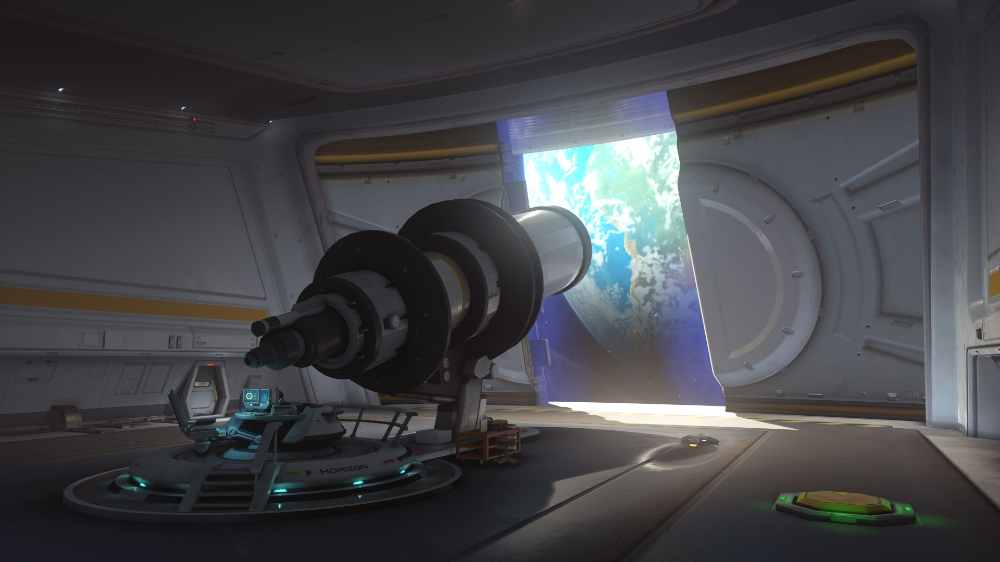
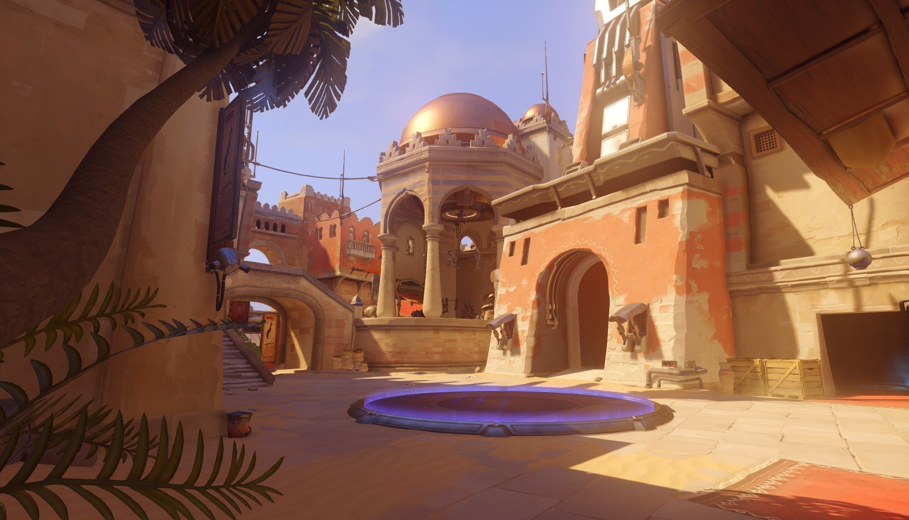

Hanamura
Es un mapa de asalto ubicado en Japón, con una estética que combina elementos tradicionales y modernos. El mapa presenta dos puntos de control: un templo en el centro y una base en la parte superior de una colina. El equipo atacante debe capturar ambos puntos en un tiempo limitado, mientras que el equipo defensor intenta detenerlos.
Horizon Lunar Colony
Es un mapa de asalto ubicado en la luna, en una colonia abandonada de Overwatch. El mapa presenta dos puntos de control: una base científica en el interior de la colonia y un punto exterior en la superficie lunar. El equipo atacante debe capturar ambos puntos en un tiempo limitado, mientras que el equipo defensor intenta detenerlos.
Temple of Anubis
Es un mapa de asalto ubicado en Egipto, en un templo antiguo dedicado a la diosa Anubis. El mapa presenta dos puntos de control: una puerta de entrada y un santuario en el interior del templo. El equipo atacante debe capturar ambos puntos en un tiempo limitado, mientras que el equipo defensor intenta detenerlos.
Volskaya Industries

Es un mapa de asalto ubicado en Rusia, en una fábrica de robótica. El mapa presenta dos puntos de control: una zona de producción en el interior de la fábrica y un punto exterior en un área de almacenamiento. El equipo atacante debe capturar ambos puntos en un tiempo limitado, mientras que el equipo defensor intenta detenerlos.